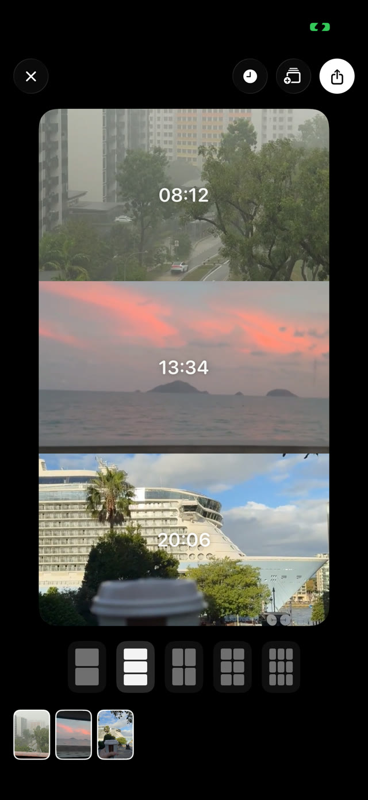

2 or 3 seconds.
That's enough.
A camera for the small but memorable moments.
Join the TestFlight betaFor iPhone · Free beta through Apple's TestFlight app
Inside snipcam



A camera for the small but memorable moments.
Join the TestFlight betaFor iPhone · Free beta through Apple's TestFlight app
